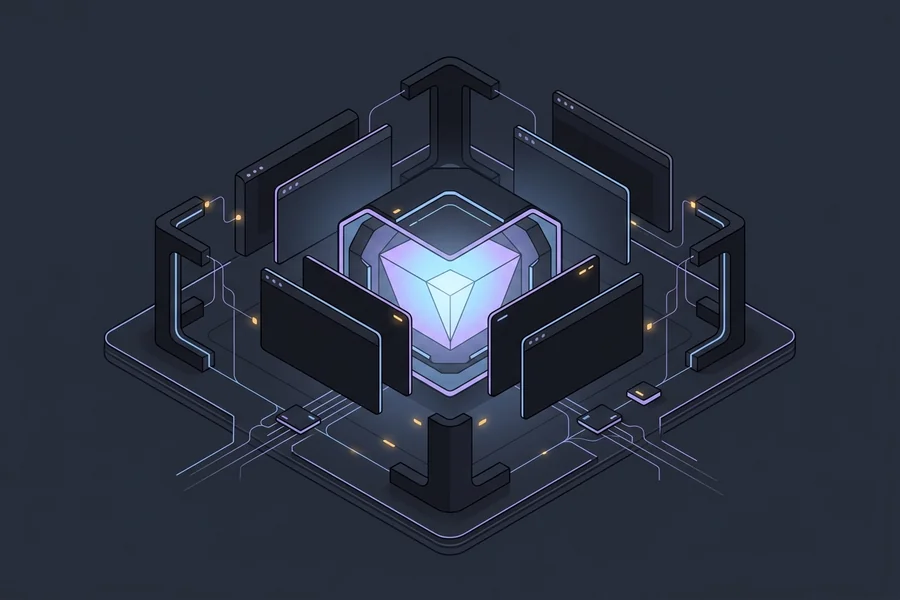

flowchart LR
Ctx["Context + Skills + MCP<br/>(read before writing)"] --> Model["Model"]
Model --> Diff["Diff"]
Diff --> Checks["Deterministic checks<br/>(types, linters, tests)"]
Checks -- "errors" --> Model

Ask a fresh coding agent to add a swap pricer to a quant codebase. Thirty seconds later you get clean, plausible code. It stores notionals as float, reaches for Pandas where the rest of the repository uses Polars, and passes curves around as bare dictionaries instead of the YieldCurve type you defined. None of it is wrong in the abstract. All of it is wrong for your system.
The model is not the problem. The harness is. Every AI coding tool ships with one: Cursor, Claude Code, and Antigravity each supply a default system prompt and a standard tool set. Those defaults are generic. They contain no context about your architecture, business requirements, deprecated libraries, or the edge cases you spent weeks solving.
Operating with default settings costs real time and tokens. The model drifts, introduces subtle regressions, and burns context tokens on repetitive corrections. Build the missing harness directly into your repository, and an unpredictable model becomes a reliable engineering tool.
Building Blocks
A repository harness has two halves: what the model reads before it writes, and the checks that run after it writes. The errors from the second half feed straight back into the next attempt.
Context
Context represents the general instructions, project goals, and business domain you provide to the model.
Keep your context small. Context is your most expensive asset. Every token in your base prompt consumes working memory and incurs cost on every single turn. Computerphile has a clear breakdown of why agent tokens become so expensive as conversation turns compound.
Divide your context into two scopes:
- Global scope: Project purpose, core practices, and non-negotiable boundaries. This belongs in a root
AGENTS.mdfile. - Local scope: Directory-specific conventions and module rules. Harnesses load these only when the model works on matching files: a nested
AGENTS.mdorCLAUDE.mdinside a subdirectory, or a Cursor rule in.cursor/rules/*.mdcwith a glob such assrc/pricing/**/*.py.
Skills
Skills represent on-demand capabilities. Unlike global context, skills do not load into memory all at once.
When a session begins, the harness exposes only skill frontmatter: its name and description. That metadata costs roughly fifty tokens per skill. The runtime injects full instructions into context only when a prompt matches that specific workflow.
Here is a minimal skill example:
Skills come in several distinct flavors:
- Wording and communication: Enforcing specific output formats. Examples include
caveman, which strips filler from responses to save output tokens, andasd-ste100, which rewrites prose into unambiguous Simplified Technical English. - General approach and methodology: Structuring model reasoning and task execution.
ponytailmakes the model check whether code needs to exist at all, or already exists in the standard library, before it writes anything. Spec-plan-execute review cycles belong here too. - Specific functions and risk assessments: Specialized diagnostic procedures. One I use before architectural migrations is Shreyas Doshi’s pre-mortem: sort every risk into tigers (real threats), paper tigers (scary but harmless), and elephants (the problems nobody says out loud).
- Tool integrations: Domain-specific scripts, test helpers, or wrappers built into your packages.
Where markdown skills define procedural workflows, the Model Context Protocol (MCP) standardizes live tool execution. MCP servers allow the harness to query external systems—such as schema inspectors, issue trackers, or documentation indices—on demand without bloating base context tokens.
Deterministic Tooling
Many developers rely on long prompt instructions to enforce coding standards. That is a mistake. Probabilistic models drift. Deterministic tools evaluate explicit rules.
Know the modern tooling ecosystem for your stack, and use it aggressively. In Python, that means full type annotation coverage combined with a fast static type checker like pyrefly.
Consider this riddle: What does this code do?
What shape is data? What input type does preparer accept? What does it return? Neither a human developer nor a type checker can answer without inspecting caller implementations.
Now consider the typed equivalent. The function body is identical. Only the annotations changed:
import datetime as dt
from collections.abc import Callable
1type YieldCurve = dict[float, float]
type ParSwapQuote = tuple[dt.date, float]
def prepare_objects(
2 data: list[list[ParSwapQuote]],
3 preparer: Callable[[list[ParSwapQuote]], YieldCurve],
) -> list[YieldCurve]:
objects: list[YieldCurve] = []
for d in data:
o = preparer(d)
objects.append(o)
return objects- 1
- Domain type aliases: a curve maps tenor (in years) to rate, a quote is a maturity date and a par rate.
- 2
- One list of quotes per curve to build.
- 3
- The callable contract states exactly what goes in and what comes out.
This version requires more effort to write. Yet it is much more readable. That clarity helps human engineers, and it cuts generation errors further. If generated code passes a single quote where a list is expected, or reads an attribute that does not exist, pyrefly rejects it before any test runs.
Bootstrapping the Harness
Your mileage may vary, but this is the exact sequence I follow when setting up a project.
The key technique is bootstrapping. Use the model itself to generate the initial harness configuration.
flowchart LR
A["1. Tooling"] --> B["2. Context"]
B --> C["3. Specs"]
C --> D["4. Published Skills"]
D --> E["5. Custom Skills"]
E --> F["6. Bespoke Tooling"]
Note that the order flips relative to the building blocks above. Tooling comes first because every later step leans on it: the context file points to the check command, and custom skills end by running it.
1. Tooling First
Deterministic tooling is your most reliable investment and offers the highest ROI.
Configuring linters, formatters, and type checkers by hand can take time. Do not do it manually. Use pre-made templates, or define desired standards and prompt the model to generate the configuration.
Create a single script command (like poe code-quality or make check) that runs everything. Then wire it in three places:
- The model’s own loop: The model runs the command after every change, reads the errors, and fixes them before it reports done. This is the cheapest feedback you will ever get. It costs seconds and no human attention.
- Pre-commit hooks: Catch what slipped through before it lands in history.
- CI pipelines: The final gate that nobody can skip.
2. Context
Next, write a minimal AGENTS.md. Mine rarely exceeds twenty lines:
# AGENTS.md
## Project
Pricing library for interest-rate swaps. Python 3.13, managed with `uv`.
## Commands
- Install: `uv sync`
- Check everything: `uv run poe code-quality`
- Tests only: `uv run pytest -q`
## Rules
- Run `uv run poe code-quality` after every change. Fix all errors before you
report done.
- Use `Decimal` for money. Never `float`.
- Start each session: read the target module, `git status`, and the relevant tests.
## Do not touch
- `vendor/` (generated code)
- `migrations/` (hand-reviewed only)Two elements matter most: what the project is trying to achieve, and the mandate that all code must pass the deterministic quality checks from step 1. Never cram twenty formatting rules into AGENTS.md. Let linters and type checkers enforce mechanical standards.
3. Spec-Driven Development
Establish your own practices for specification.
A model generates incorrect implementations when requirements are vague. Before requesting code generation, define three elements:
- Intent: The problem you are solving.
- Constraints: What cannot break.
- Acceptance criteria: The tests that prove success.
Resolving ambiguity in a short specification takes minutes. Fixing a 500-line pull request built on incorrect assumptions takes hours.
4. Published Skills
The ecosystem now offers thousands of community skills, installable with a single npx skills add command.
A new hype wave appears every week. Approach published skills with care:
- Security risks: Community skills often contain executable scripts and shell commands. Always audit the underlying code before running them.
- Skill bloat: Overloading the environment with 100 skills degrades tool selection. Routing fails when descriptions overlap.
Experiment, evaluate what works, and keep your skill inventory lean.
5. Custom Skills
Most modern agentic tools include skill-authoring capabilities in their default harness. Use them.
When you type the same prompt instructions three times, turn that workflow into a skill. Document the procedure, prompt the model to scaffold the skill file, verify the steps, and commit the file to version control.
Treat custom skills as version-controlled code. Review modifications to them through pull requests just as you would application code.
6. Bespoke Tooling
Build your own bespoke tooling. You understand the unique character of your project better than anyone else.
Ask yourself these questions:
- What hidden conventions do experienced team members follow?
- What architectural invariants must we guarantee?
- Where do repeated mistakes happen?
Spend half a day identifying those pain points. Then prompt the model to write a custom lint script or verification tool that detects violations. Wire that tool directly into your local check command.
Here Be Dragons
A healthy dose of realism is necessary when working with agentic systems:
- Developer skills decay: If you outsource all debugging and analysis to automated tools, your own technical edge dulls. You must understand generated code deeply enough to catch subtle algorithmic failures or silent memory leaks during review.
- The “solved software” myth: Marketing pitches claim software production is solved and everyone can just prompt. The fantasy of a dark factory where code writes itself without human intervention is an illusion. Real engineering remains hard.
- Token costs are real: Multi-turn agent loops burn tokens fast. Every turn re-sends your base context (see Context), and automated loops that cycle through the same failing test multiply that cost. Most harnesses report per-session token usage. Look at it weekly, and trim whatever context the model never needed.
- Review fatigue and rubber-stamping: Automated tools generate hundreds of plausible lines in seconds. The bottleneck shifts from writing code to auditing it. If tired engineers rubber-stamp massive diffs, subtle technical debt rapidly pollutes the repository.
- The “set it and forget it” trap: A repository harness is not a static setup. As codebases evolve, libraries update, and model capabilities shift, your rules, skills, and deterministic gates require continuous maintenance.
If you do one thing after reading this, make it the single check command from step 1. Wire it into the model’s loop today. Everything else in this post builds on it.
References
- How to set up your repository for AI coding agents – Alfonso Graziano’s guide on repository context layers and deterministic feedback gates from AI-Native Software Engineering (O’Reilly).
- Agent Harness Engineering – Addy Osmani on designing the scaffolding around coding agents.
- Why AI Tokens are so Expensive – Computerphile video on token costs and runaway context growth in agentic loops.